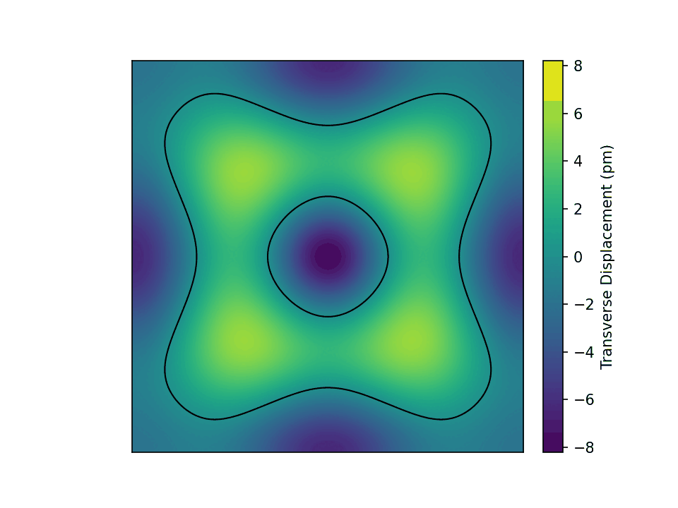
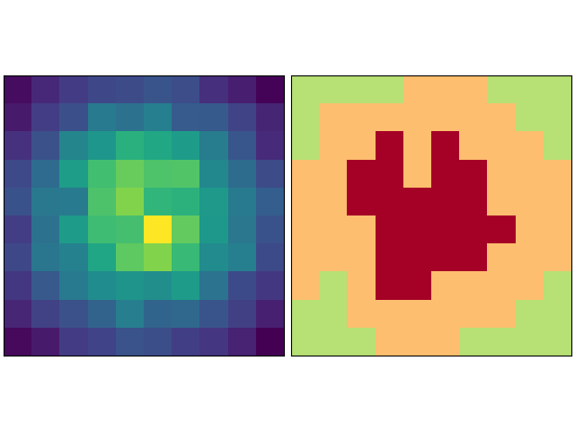

A bit about symplectic methods
Some information about symplectic integration methods and their use cases.
8/26/26
Some information about symplectic integration methods and their use cases.
8/26/26

An introduction to the framework of Hamiltonian optics, Poisson brackets, and Lie transformations (original pdf here).
5/20/26

A presentation about Chladni plates fulfilling a requirement for my Intermediate lab experience. More information and a complete blog post soon!
5/__/26

Linear Programming and Operations Research (LPOR) project on Intensity Modulated Radiation Therapy (IMRT).
5/7/26